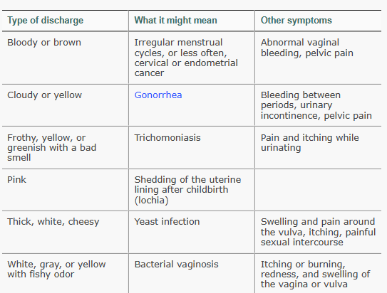
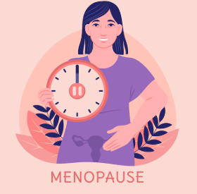

MENSTRUATION'S EFFECT ON PHYSICAL HEALTH
Menstruation can be accompanied by various physical complications that affect the female body. Hence, it is important to pay attention to few complications which happen before, during and after menstrual cycle. Also, we will cover various types of vaginal discharge which occur during this phase and what can it mean to have them and when to consult a doctor.
LET'S BEGIN BY FIRST EXPLORING THE TYPES OF VAGINAL DISCHARGE...
TYPES OF VAGINAL DISCHARGE
Vaginal discharge, also known as leukorrhea, is a fluid that's usually clear or whitish, watery and comes from your vagina. It's an important function in female reproductive system. This keeps your vagina clean and helps prevent infection. Most of the time, vaginal discharge is perfectly normal. The amount can vary, as can odor and color, depending on the time in your menstrual cycle. It may also smell different when you're pregnant. Below are few discharges which often can't be considered as normal and you may need to seek medical attention.
1. BROWN OR BLOODY DISCHARGE
This type of discharge can be normal before or after your period, can also be a sign of light period. A small amount of brown or red discharge can occur when a fertilized egg attaches to the uterine wall. This can happen up to 3 days. Also, it can be a sign of old blood which can be left behind from previous menstrual cycle.
~ CAUSES
- Can be a sign that your period has just ended or is about to start
- Hormonal imbalances, perimenopause, ovulation
- Pregnancy
- Dryness in the vaginal area
- Can be the sign of bacterial infections or STI
- Other conditions like Fibroids or Polyps
2. CLOUDY OR YELLOW DISCHARGE
This type of discharge is usually normal and due to natural functioning of vagina. However, it can indicate other medical conditions as well which may need medical care.
~ CAUSES
- OXIDATION, when it comes in contact with air it can turn creamy or light yellowish color (normal)
- Pregnancy
- Fishy odor and itching alongwith discharge can be a sign of bacterial infection
- Can also be the sign of viral infections or STI if coming along a pungent smell
3. PINK DISCHARGE
This type of discharge can indicate the start of your period. It most commonly occurs with spotting before a period. It can also indicate implantation bleeding in early pregnancy.
~ CAUSES
- During menstrual cycle when fresh blood mixes with vaginal mucus
- Pregnancy
- Any injury which may have happen during sexual intercourse
- Can be because of ovarian cysts or any infection
- Perimenopause
- MUCUS PLUG, during pregnancy you may notice an increase in discharge that's brownish, pink, happens because your cervix softens and releases mucus plug
4. GREEN DISCHARGE
This type of discharge can indicate the start of your period. It most commonly occurs with spotting before a period. It can also indicate implantation bleeding in early pregnancy.
~ CAUSES
- Sexually Transmitted Infection (STI)
- TRICHOMONIASIS (A vaginal infection)
- Forgotten tampon that's left in
- NONSPECIFIC VULVOVAGINITIS, A condition that causes greenish discharge and irritation of labia and vaginal opening, most common in young girls before puberty
- In rare cases Gynecological cancers
Now it's time to move on to the next segment, let's now discuss about few physical complications that occur before, during and after menstruation.
.png)
.png)
.png)
.png)
BEFORE MENSTRUATION (Pre-Menstrual Phase)
- Breast Tenderness: Hormonal changes can cause breast swelling and tenderness.
- Bloating and Water Retention: Fluid retention can lead to bloating, weight gain, and discomfort.
- Mood Swings: Hormonal fluctuations can cause irritability, anxiety, and depression.
- Fatigue: Some women may experience fatigue, lethargy, and a general feeling of being unwell.
DURING MENSTRUATION
- Menstrual Cramps (Dysmenorrhea): Uterine contractions can cause painful cramps, which can range from mild to severe.
- Heavy or Prolonged Bleeding: Excessive bleeding can lead to anemia, fatigue, and discomfort.
- Clots and Heavy Flow: Passing large clots or experiencing heavy flow can be uncomfortable and painful.
-Nausea and Vomiting: Some women may experience nausea and vomiting due to hormonal changes and prostaglandins.
AFTER MENSTRUATION (Post-Menstrual Phase)
- Post-Menstrual Spotting: Light bleeding or spotting can occur after menstruation due to hormonal changes.
- Fatigue and Weakness: Some women may experience fatigue, weakness, and a general feeling of being unwell after menstruation.
- Mood Swings: Hormonal fluctuations can cause mood swings, irritability, and anxiety after menstruation.
-Breast Tenderness: Breast tenderness can persist after menstruation due to hormonal changes.
Heyy lady, now let's talk about the First Period (MENARCHE) and the End Phase of Periods(MENOPAUSE)
Here, we go...
MENARCHE (FIRST PERIOD)
Menarche is a significant milestone in a person's life, marking the beginning of their menstrual cycle.Menarche is the first menstrual period, or the first time a person experiences menstrual bleeding. It's a natural part of puberty and a sign of reproductive maturity.The average age of menarche varies globally, but it typically occurs between 11 and 14 years old. Factors such as genetics, nutrition, and overall health can influence the timing.
SIGNS AND SYMPTOMS
Before menarche, individuals may experience:
1. Breast development
2. Pubic hair growth
3. Vaginal discharge
4. Mood swings
5. Abdominal cramps
PHYSICAL AND EMOTIONAL CHANGES
Menarche marks the beginning of regular menstrual cycles, which can bring physical and emotional changes, such as:
1. Menstrual cramps
2. Bloating and breast tenderness
3. Mood swings
4. Increased emotional sensitivity
5. Changes in sleep patterns
Menarche can be a significant emotional experience. It's crucial to provide support, guidance, and open communication to help individuals navigate this transition.
Menarche is celebrated or marked in various ways across cultures, reflecting societal attitudes toward menstruation and femininity.
Although, Menarche is a natural process, but it's essential to be aware of potential health implications. Girls who experience early menarche (before age 12) may be at a higher risk for health problems later in life, such as breast cancer and cardiovascular disease.
Hence, it's crucial to be aware of the physical, emotional, and cultural implications associated with it and seek medical advice if needed.
MENOPAUSE (END OF PERIODS)

Menopause! A significant milestone in a woman's life, marking the end of her reproductive years.Menopause is a natural biological process that occurs when a woman's ovaries stop producing eggs, and hormone levels decrease.Menopause is a natural part of life, but it can bring significant physical, emotional, and psychological changes. Understanding the symptoms, causes, and treatment options can help women navigate this transition with confidence and support.
There are three stages:
1. Perimenopause: The transition period leading up to menopause, typically lasting 2-10 years. Hormone levels fluctuate, causing symptoms.
2. Menopause: The point when a woman has not had a menstrual period for 12 consecutive months.
3. Postmenopause: The stage after menopause, when hormone levels remain low.
Common symptoms during perimenopause and menopause:
1. Hot flashes: Sudden feelings of heat, sweating, and flushing.
2. Night sweats: Hot flashes during sleep.
3. Mood changes: Irritability, anxiety, and depression.
4. Vaginal dryness: Decreased estrogen levels cause vaginal dryness and pain during sex.
5. Sleep disturbances: Difficulty sleeping or insomnia.
6. Weight gain: Many women experience weight gain, particularly around the midsection.
7. Changes in menstrual cycle: Irregular periods, heavier or lighter bleeding.
Causes and Risk Factors
1. Aging: Menopause is a natural part of aging.
2. Genetics: Family history can influence the age of menopause.
3. Lifestyle factors: Smoking, poor diet, and lack of exercise may contribute to an earlier menopause.
4. Medical conditions: Certain medical conditions, such as premature ovarian failure, can cause menopause.
Diagnosis and Treatment
1. Blood tests: To check hormone levels.
2. Pelvic exam: To rule out other conditions.
3. Hormone replacement therapy (HRT): To alleviate symptoms.
4. Non-hormonal medications: To treat specific symptoms, such as hot flashes.
5. Lifestyle changes: Healthy diet, regular exercise, and stress management.
Complications and Long-Term Effects
1. Osteoporosis: Decreased estrogen levels can lead to bone loss.
2. Heart disease: Menopause increases the risk of heart disease.
3. Vaginal atrophy: Decreased estrogen levels can cause vaginal dryness and pain.
4. Urinary incontinence: Weakened pelvic muscles can lead to urinary incontinence.
Emotional and Psychological Aspects
1. Emotional changes: Mood swings, anxiety, and depression.
2. Self-esteem: Body changes and symptoms can affect self-esteem.
3. Relationship changes: Menopause can impact relationships with partners, family, and friends.